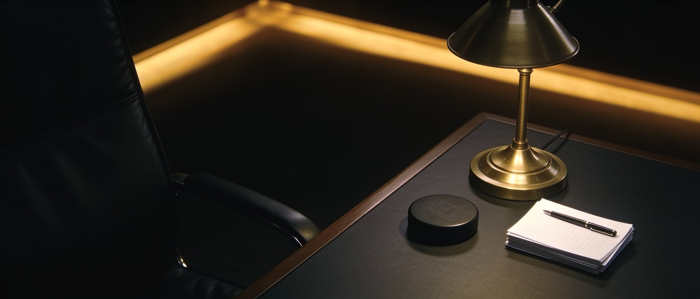

Run your front officeThe Owner holds the seats and sets access — the league office approves every appointment
Team HQ → Management is your desk: fill the GM and AGM seats, decide what each may do, and clear the moves they send you.

Open the front office
Management sits in the Team HQ group. The badge on it counts the moves waiting on you.
Open Team HQ → Management
Sign in with Discord, then use Management under Team HQ in the hub sidebar. The yellow badge is the number of your managers' moves waiting on your approval.
#/hub/management
Read the three seats
The Front office table is one row per seat — Owner, General Manager, Assistant GM — with its holder, its status and your action. A held seat reads Confirmed; an empty one reads Vacant — required.
 2
2Fill a seat, or clear one
Only the Owner touches these seats. A GM or AGM nominates and removes nobody (Rule 2.6).
Nominate into a vacant seat
On a vacant row press Nominate. Pick any player signed up for the season in Player — start typing a gamertag — add a line in Why them? (optional), then send Submit nomination.
The league office's reviewers vote. The seat reads Pending reviewer vote until they decide, and you can withdraw while it waits — a nomination is not yet an appointment.
Remove a sitting manager
Press Remove on a held seat and confirm. It takes effect at once: the seat falls vacant, their $3,000,000 management contract ends with it, and the league office is told. Nominate a successor next.
 3
3
 4
4Set what each seat may do
Page by page, per seat. Nothing changes until you save.
Give a page, gate a page, or hold it back
For every Team HQ page set the GM and the AGM to Full access, Owner approves or Hidden. Flip a cell and the footer reads Unsaved changes. — your edits are a draft until Save permissions. Discard changes throws them away.
The seat acts freely — the move is live the moment they make it.
They see the page, but every move on it waits in your queue until you approve it.
The page is withheld and its moves refused. Your own seat is never limited.
Everything starts at full access except this Management page, which is yours alone unless you open it. Game stats and Management carry no roster or cap moves, so they are open or hidden only — never Owner approves.
 5
5Clear the queue
Moves from a seat you set to Owner approves land here. Approving runs the move; denying tells them why.
Approve or deny each move
Every row names the move, who sent it and from which page. Approve opens a note box and Approve and make it runs it through the league's usual checks. Deny changes nothing and tells your manager why.
A move approved too late — a locked lineup, a withdrawn offer — reads Could not be made with the reason in red, rather than half-applying.
 6
6
GM & AGM: sent, not made
On a page the Owner set to Owner approves, your work is sent for approval — it is not live yet.
Your move is sent, not made
A banner at the top of the page names the Owner and the rule. Make your move as usual and you get the toast “Sent to the Owner for approval — …”; it lands in the Owner's queue as Waiting. You are told when they decide either way.
Withdraw before they decide
Press Withdraw on your waiting move to pull it back — “It comes off the Owner's queue and nothing changes.” Your waiting moves also show on your dashboard's Management tasks card.
 78
78